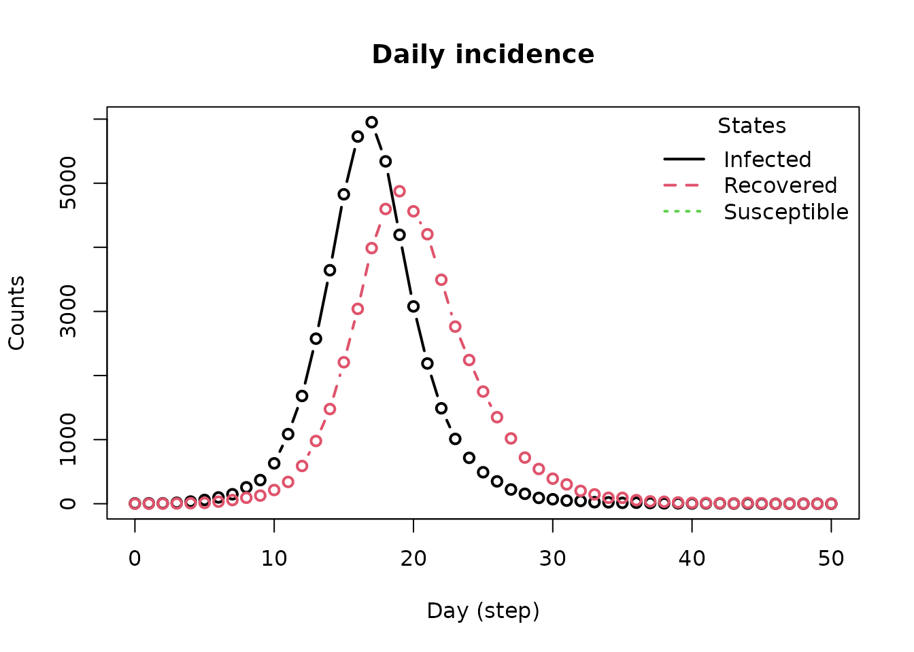
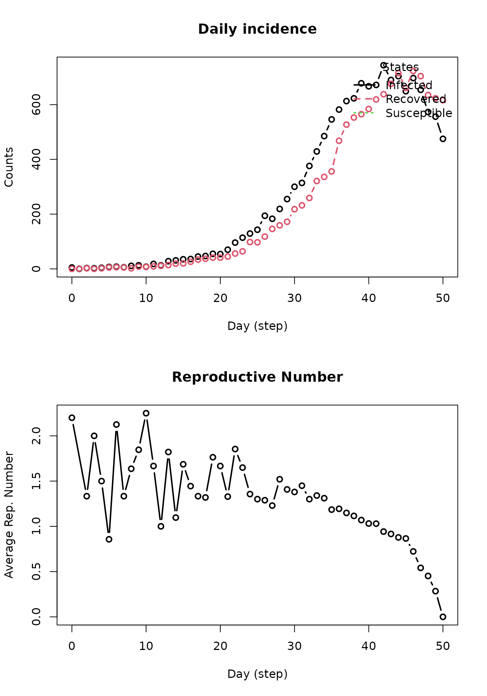

Getting started with epiworldR
Derek Meyer
George Vega Yon
2024-11-04
Source:vignettes/getting-started.Rmd
getting-started.RmdepiworldR is an R package that provides a fast (C++ backend) and highly- customizable framework for building network-based transmission/diffusion agent- based models [ABM]. Some key features of epiworldR are the ability to construct multi-virus models (e.g., models of competing multi-pathogens/multi-rumor,) design mutating pathogens, architect population-level interventions, and build models with an arbitrary number of compartments/states (beyond SIR/SEIR.)
Example 1: Simulating an SIR model
Setup and running the model
This example implements a social network with parameters listed
within the ModelSIRCONN function. The virus name is
specified (COVID-19), 50000 agents are initialized, the virus prevalence
of 0.001 is declared, each agent will contact two others (contact_rate),
the transmission rate for any given agent is 0.3, and the recovery rate
is set to
.
To create this model on epiworldR, simply use the
ModelSIRCONN function. From here, the example will take you
through the basic features of epiworldR.
library(epiworldR)
model_sir <- ModelSIRCONN(
name = "COVID-19",
n = 50000,
prevalence = 0.0001,
contact_rate = 2,
transmission_rate = 0.5,
recovery_rate = 1 / 3
)
# Printing the model
model_sir
#> ________________________________________________________________________________
#> Susceptible-Infected-Removed (SIR) (connected)
#> It features 50000 agents, 1 virus(es), and 0 tool(s).
#> The model has 3 states. The model hasn't been run yet.Printing the model shows us some information. Nevertheless, we can extract detailed information using the summary method.
summary(model_sir)
#> ________________________________________________________________________________
#> ________________________________________________________________________________
#> SIMULATION STUDY
#>
#> Name of the model : Susceptible-Infected-Removed (SIR) (connected)
#> Population size : 50000
#> Agents' data : (none)
#> Number of entities : 0
#> Days (duration) : 0 (of 0)
#> Number of viruses : 1
#> Last run elapsed t : -
#> Rewiring : off
#>
#> Global events:
#> - Update infected individuals (runs daily)
#>
#> Virus(es):
#> - COVID-19
#>
#> Tool(s):
#> (none)
#>
#> Model parameters:
#> - Contact rate : 2.0000
#> - Recovery rate : 0.3333
#> - Transmission rate : 0.5000First, the name of the model, population size, number of entities (think of these as public spaces in which agents can make social contact with one another), the duration in days, number of viruses, amount of time the last replicate took to run (last run elapsed t), and rewiring status (on or off). The model also includes a list of global actions (interventions) that are called during the model run. Next, you will see a list of the viruses used in the model. In this case, COVID-19 was the only virus used. Note that epiworldR can include more than one virus in a model. Tool(s) lists agents’ tools to fight the virus. Examples of this may include masking, vaccines, social distancing, etc. In this model, no tools are specified. Lastly, model parameters are listed.
To execute the model, use the run function with the SIR model object, the number of simulation days, and an optional seed for reproducibility. Next, print out the results from the simulated model using model_sir.
run(model_sir, ndays = 50, seed = 1912)
#> _________________________________________________________________________
#> |Running the model...
#> |||||||||||||||||||||||||||||||||||||||||||||||||||||||||||||||||||||||| done.
#> | done.
summary(model_sir)
#> ________________________________________________________________________________
#> ________________________________________________________________________________
#> SIMULATION STUDY
#>
#> Name of the model : Susceptible-Infected-Removed (SIR) (connected)
#> Population size : 50000
#> Agents' data : (none)
#> Number of entities : 0
#> Days (duration) : 50 (of 50)
#> Number of viruses : 1
#> Last run elapsed t : 98.00ms
#> Last run speed : 25.48 million agents x day / second
#> Rewiring : off
#>
#> Global events:
#> - Update infected individuals (runs daily)
#>
#> Virus(es):
#> - COVID-19
#>
#> Tool(s):
#> (none)
#>
#> Model parameters:
#> - Contact rate : 2.0000
#> - Recovery rate : 0.3333
#> - Transmission rate : 0.5000
#>
#> Distribution of the population at time 50:
#> - (0) Susceptible : 49995 -> 3276
#> - (1) Infected : 5 -> 1
#> - (2) Recovered : 0 -> 46723
#>
#> Transition Probabilities:
#> - Susceptible 0.95 0.05 0.00
#> - Infected 0.00 0.69 0.31
#> - Recovered 0.00 0.00 1.00There are two additional sections included in the summary after running the model. First, we see the distribution of the population at time 50. This section describes the flow of agents from each state (SIR) after 50 days. In the example, you’ll see the number of agents in the susceptible state decreased from 49,995 to 3,276, the number of agents in the infected state increased from 5 to 1, and recovered agents increased to 46,723 after 50 days. The counts for these states will change based on model parameters or simulation run-time. The transmission probabilities section outputs a 3x3 matrix that describes the probability of moving from one state to another. For example, in the susceptible row, each agent has a 0.95 probability of remaining in the susceptible state with a 0.05 probability of moving from the susceptible state to the infected state. Notice there is no chance of skipping states. In other words, an agent can’t jump from the susceptible state to the recovered state; that agent must pass through the infected state to progress to the recovered state. The same logic applies to moving backward; an agent cannot become susceptible again after infection.
Extracting information
After running the epiworldR model, below is a list of all the functions that can be called using the epiworld model object.
methods(class = "epiworld_model")
#> [1] add_tool add_virus
#> [3] agents_from_edgelist agents_smallworld
#> [5] get_agents get_hist_tool
#> [7] get_hist_total get_hist_transition_matrix
#> [9] get_hist_virus get_n_replicates
#> [11] get_n_tools get_n_viruses
#> [13] get_name get_ndays
#> [15] get_param get_reproductive_number
#> [17] get_states get_today_total
#> [19] get_transition_probability get_transmissions
#> [21] print queuing_off
#> [23] queuing_on run_multiple
#> [25] run set_name
#> [27] set_param size
#> [29] summary verbose_off
#> [31] verbose_on
#> see '?methods' for accessing help and source codeTo demonstrate, start with the basic plot and get_hist_total functions.
plot(model_sir)As evident from the above plot, the SIR model constructed from epiworldR displays the changes in susceptible, infected, and recovered case counts over time (days). Notice after a certain amount of time, the curves flatten. Below, a table representation of the above plot is printed, complete with each state within the SIR model, date, and agent counts.
head(get_hist_total(model_sir))
#> date state counts
#> 1 0 Susceptible 49995
#> 2 0 Infected 5
#> 3 0 Recovered 0
#> 4 1 Susceptible 49988
#> 5 1 Infected 12
#> 6 1 Recovered 0An essential statistic in epidemiological models is the reproductive number:
repnum <- get_reproductive_number(model_sir)
head(repnum)
#> virus_id virus source source_exposure_date rt
#> 1 0 COVID-19 7312 44 0
#> 2 0 COVID-19 46328 43 0
#> 3 0 COVID-19 43475 42 0
#> 4 0 COVID-19 23672 42 0
#> 5 0 COVID-19 18224 42 1
#> 6 0 COVID-19 48317 41 2epiworldR has a method to plot the reproductive number automatically. The function takes the average of values in the above table for each date and repeats until all data have been accounted for.
x <- plot(repnum, type = "b")
subset(x, date == 10) # Reproductive number on day 10
#> virus_id virus date avg n sd lb ub
#> 11 0 COVID-19 10 2.603175 630 2.29425 0 8.275Another typical piece of information is the daily incidence. This is
the number of new cases per day. In epiworldR, we can get the incidence
by looking at the daily transitions between states. Although the
function get_hist_transition_matrix provides the desired
data, the function plot_incidence is a nice wrapper for
visualizing the data:
plot_incidence(model_sir)
Adding more viruses/viruses
epiworldR supports multi-virus models. The below code gives
instructions on how to implement this. Using the virus
function, give a name to the new virus/virus with its corresponding
probability of infecting any given agent. In this example,
prob_infecting is set to 1.0, making it highly contagious.
To officially add this new virus to the model, use the
add_virus function by calling the original epiworldR model
object, the new virus, and the new virus’ prevalence (which is set to
0.01 in this example).
# Building the virus
flu <- virus(
name = "Flu", prob_infecting = .3,
prevalence = .0001, as_proportion = TRUE
)
# Adding the virus to the model
add_virus(model_sir, flu)After running the updated model with the new virus included for 50 days, the output below describes the simulation. To confirm that the flu is included, notice the presence of “Flu” in the Virus(es) section of the output. All other output is interpretable as specified in previous sections.
run(model_sir, ndays = 50, seed = 1912)
#> _________________________________________________________________________
#> |Running the model...
#> |||||||||||||||||||||||||||||||||||||||||||||||||||||||||||||||||||||||| done.
#> | done.
model_sir
#> ________________________________________________________________________________
#> Susceptible-Infected-Removed (SIR) (connected)
#> It features 50000 agents, 2 virus(es), and 0 tool(s).
#> The model has 3 states.
#> The final distribution is: 3285 Susceptible, 3 Infected, and 46712 Recovered.Plotting the previous model (including the flu) yields the following. Notice the presence of two reproductive numbers plotted over time. Variant 0 refers to COVID-19, and virus 1 refers to the flu.
repnum2 <- get_reproductive_number(model_sir)
op <- par(mfrow = c(2, 1))
plot(model_sir)
plot(repnum2, type = "b")
par(op)Tools
Now, the implementation of tools to combat any viruses and viruses in
the model will be demonstrated. First, for the sake of simplicity,
remove the flu virus from the SIR model object (keep in mind the index
for the flu virus in the model object is 1). Next, provide parameters
for the new tool using the tool function. These parameters
include the name of the tool, any reduction in probabilities for the SIR
model parameters, and increased probability of recovery option. In order
to add the tool to the SIR model, use the add_tool function
with the SIR model object, new tool, and prevalence of the tool. In this
example, assume that 85% of the population will have received the
vaccination.
# Removing the flu virus from the model
rm_virus(model_sir, 1)
vaccine <- tool(
name = "Vaccine",
prevalence = 0.5,
as_proportion = TRUE,
susceptibility_reduction = .9,
transmission_reduction = .5,
recovery_enhancer = .5,
death_reduction = .9
)
add_tool(model_sir, vaccine)
run(model_sir, ndays = 50, seed = 1231)
#> _________________________________________________________________________
#> |Running the model...
#> |||||||||||||||||||||||||||||||||||||||||||||||||||||||||||||||||||||||| done.
#> | done.
repnum3 <- get_reproductive_number(model_sir)
op <- par(mfrow = c(2, 1))
plot_incidence(model_sir)
plot(repnum3, type = "b")
par(op)